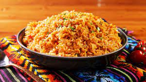

Spanish Rice

Signature Spanish rice recipe, a delicious accompaniment to steak or chicken.
Ingredients
- onion
- white rice
- chicken stock
- tomatos
- oregano
Steps
- Heat olive oil in large skillet on medium/high heat. Add the rice and stir it so that the rice is lightly coated with the oil. Cook on medium high heat, stirring often, until much of the rice has browned.
- Add the onion and cook, stirring frequently another 3 minutes, until the onions begin to soften. Add the garlic and cook until the onions are translucent and softened, about a minute more.
- To save time you can bring the stock to a simmer in a separate saucepan, with the tomato, oregano, and salt.
- Add the browned rice to the simmering broth (or broth to the rice, depending on which pan has a cover). Or you can skip the simmering step and just add the broth and tomatoes to the rice.
- Bring everything to a simmer, cover the pot and lower the heat to barely maintain a low simmer. Cook for 15-25 minutes, depending on the type of rice and the instructions on the rice package. Remove from heat and let sit for 5 minutes.
- Fluff with a fork or spoon and serve.